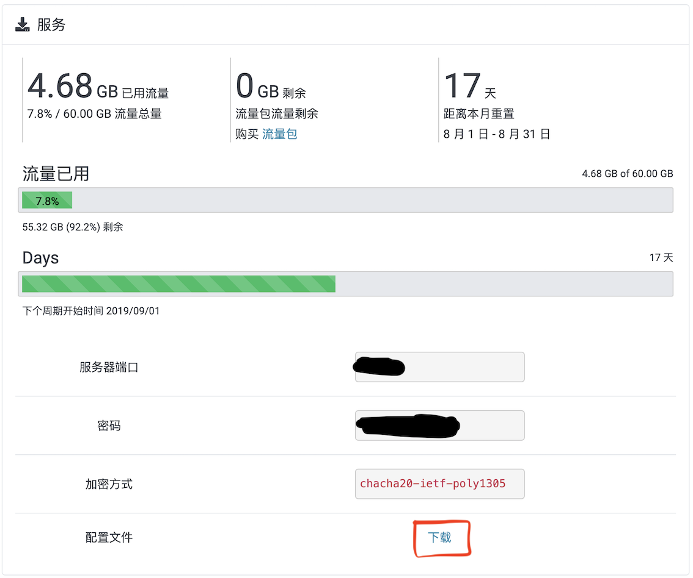

前言
ShadowSocks 基本认识
本文介绍用ShadowSocks这个工具进行科学上网的配置方法，不知道啥是科学上网或者为啥要科学上网的童鞋可以不用再看下去了，相信你也没这个需求。。。
至于为啥选择ShadowSocks呢？笔者表示当年用了很长时间的Lantern突然被封，其它VPN找了半天，免费的速度太慢，收费的又比较贵，对比之下ShadowSocks以稳定著名，价格也能接受，还可以自己租服务器搭服务，于是果断ss。。。
既然用的工具是ShadowSocks，那么对它还是要有一些基本的认识：ShadowSocks本身是一套基于Socks5代理方式加密的在网络上传输数据的技术，常被简称为ss。既然要实现网络数据传输，服务端和客户端总是少不了的。简单来说，通过ss科学上网，就是将传输的数据通过服务端和客户端的加密，通过GFW的检测。
比如你要访问Google，那么发出请求的过程中数据是这样传输的：
本地应用 -> ss 客户端 -> ss 服务端 -> Google主机
其中ss客户端安装在你的电脑上，而ss服务端安装在境外(或者其他能够访问Google的)服务器上，数据在它们之间的传输是用Socks5加密的。
注意，ss本身只是一项技术，不要把它和提供ss服务器的公司、以及科学上网这个概念搞混了。
v2ray
其实，数据只经过ss一次转发还不是很安全，有一种叫做v2ray的技术，可以将数据再进行一次加密传输，提高安全性。如果加入v2ray，那么数据传输的过程就是：
本地应用 -> ss 客户端 -> v2ray 服务器 -> ss 服务器 -> 境外主机
其中，v2ray安装在境内的服务器上，和我们的本地机器直接传输数据，有兴趣的朋友可以上官网研究怎么配置，本文并不涉及v2ray的配置。
服务端
ss服务器可以通过这些方式获得：
购买第三方服务商(如shadowsocks.to)的ss服务
自己租VPS，在服务器上搭建ss服务
在网上搜免费的
ss服务器，白嫖
下面就分别介绍一下如何操作。
购买第三方 ss 服务
优点：省心，不需要自己配置服务端的密码、加密方式等信息，如果哪天被和谐了也可以很快更换服务器
缺点：通常有连接数和使用流量限制，不过最初级的服务器和流量也够大多数个人用户使用了
这里推荐笔者自己使用的shadowsocks.to这个提供商提供的ss服务，效果不错。注意，提供商的网址修改了多次，因此前面放上来的链接可能已经失效了。
对于个人而言，选择“入门版”已经够用了，具体如何购买这里就不阐述了，网站上很容易找到入口。
付完款后，还需要将配置文件下载下来，里面包含了各个服务器节点的域名、端口、密码、加密方式等信息，等下配置客户端的时候要用到。

另外，各个服务器节点旁边的二维码在配置移动端(Android、iOS)的ss客户端时也要用到。
自己搭建ss服务
优点：配置自由；流量不受限制；可以给多人使用
缺点：有一定技术门槛；如果IP被封，需要换服务器
ShadowSocks官网上有关于如何搭建服务器和配置信息的说明，按照上面的教程就可以搭好服务器，下面简单地介绍一下基础的步骤：
准备服务器
一台能够访问外网的VPS主机是必要的，可以从典型的服务商如Vultr处购买，然后通过ssh登录主机，安装ss服务。
用pip安装ss服务
一般的主机上都默认安装有Python2和pip，连接VPS主机，打开终端检查一下：
1 | root@xxn:~# python --version |
1 | root@xxn:~# pip --version |
接着就可以用pip去安装ShadowSocks了：
1 | pip install shadowsocks |
编辑配置文件
编辑一个配置文件，里面写好配置信息，用于启动ss服务。文件的位置可以随便放，只要你知道在哪里，这里以/etc/shadowsocks.json为例，新建/etc/shadowsocks.json文件，写入内容：
1 | { |
对应参数的意义：
server_port:ss服务的端口，可以随意取值，一般在1024~65536，不和常用其他端口冲突即可password: 等下客户端连接时使用的密码，可以随意设置，稍复杂一些为好method: 加密方式，可选的方式有不少，官网推荐使用"chacha20-ietf-poly1305"或者"aes-256-gcm"timeout: 超时时间(秒)mode:ss服务模式，"tcp_and_udp"表示既支持tcp也支持upp
上面的参数是我服务器上的设置，各个参数都可以改，只要等下客户端参数保持一致即可。
更加高级的配置信息可见官网。
启动ss
打开终端，启动ss进程：
1 | ssserver -c /etc/shadowsocks.json -d start |
其中，-c后面接配置文件的路径，-d表示daemon模式，即守护进程模式运行，启动后不占据终端。
停止ss：
1 | ssserver -c /etc/shadowsocks.json -d stop |
如果懂一些Linux服务技术，可以将ss设置成服务，用systemctl设置开机自动启动等等，不赘述了，和其他服务并无二异。
找免费 ss 服务
优点：顾名思义，省钱
缺点：速度不稳定，公开的服务器地址，容易被封
这就没什么好讲的了，自己到网上找公开免费的ss服务器，下载地址、密码等信息。不推荐这种做法，因为确实不稳定。
客户端
通用逻辑
不论是哪个平台上的ss客户端，配置都是一样的思路：将ss服务器的配置信息(至少包括服务器地址、端口、加密方式、密码)添加到客户端即可。简单来说，保证客户端和服务端的配置信息一致，就可以连接。
如果是自己在VPS上搭的服务，那么配置信息都是自己输入的，相信不会有什么问题。如果是在提供商处购买，可以直接下载配置文件，或者扫描二维码，即可添加配置信息，不用手动一个个输入。
另外，客户端一般都可以设置“全局模式”和“pac模式”，顾名思义，全局模式就是所有流量均走代理，pac模式会根据GWF List判断哪些ip需要走代理，只在访问这些网站的时候走代理，从而加速国内网站的访问速度。一般不推荐全局模式，因为所有流量都走代理，容易被封。
有些应用可能不那么“智能”，比如Android Studio在该走代理连接Google更新的时候不走代理，那么可以找找应用里有没有http/socks5代理的设置，host设置成127.0.0.1，端口设置成客户端暴露出来的http/socks5端口。如果应用本身不支持http/socks5代理，再开全局模式强行让它走代理。
Windows
在GitHub官网上下载最新的Windows客户端，解压zip文件得到exe可执行文件，将它和配置文件放在一起，双击打开即可使用。
Linux
shadowsocks-qt5
以Ubuntu为例，在GitHub官网上下载最新客户端，安装之后运行，找到导入服务器配置文件的选项，导入下载好的配置文件即可。
终端开启
相信Linux用户不会仅满足于图形界面，和前面在VPS上安装ss服务一样，首先在本地安装ss：
1 | pip install shadowsocks |
然后编辑配置文件，注意和服务器配置信息保持一致：
1 | { |
最后一项local_port是在本机上暴露的socks5端口，供其他应用走代理用。
启动ss进程(以配置文件放在/etc/shadowsocks.json为例)：
1 | sslocal -c /etc/shadowsocks.json -d start |
终端走代理
上面的设置已经够浏览器科学上网了，然而有时在终端上用pip/conda/docker进行pull/push时，如果不将源换成国内源，那么速度简直如同便秘一般让人难受，搞不好快要下完时突然连接中断，简直和吃屎一样难受。所以为何不让终端走代理，体验飞一般的感觉？
当然，一般来说客户端设置成全局模式，终端就可以科学上网了，但是笔者的ubuntu偏偏不行。。。所以下面介绍一下用privoxy实现终端走代理：
安装privoxy:
1 | sudo apt-get update |
修改配置文件，打开配置文件/etc/privoxy/config，取消这一行的注释：
1 | #listen-address localhost:8118 |
在底部加上：
1 | forward-socks5 / localhost:1080 . |
不要忘了最后的点号，8118是http代理的窗口，1080是刚才终端启动时设置的socks5端口，如果是客户端启动，要打开客户端查看socks5监听端口，修改成相应的值。
然后重启privoxy：
1 | sudo service privoxy restart |
以后开机之后要启动privoxy，将上面的restart改成start即可。
最后还要配置两个bash变量http_proxy和https_proxy才能实现终端走代理：
1 | export http_proxy="http://localhost:8118" |
笔者则是直接在~/.bashrc中加入了两个函数控制是否走代理：
1 | function proxy_on() { |
另外，除了privoxy，proxychains也是一个不错的选择，不过笔者并没有用过。
Mac
mac上的客户端和Windows、linux并没有什么明显的区别，同样在GitHub官网上下载最新客户端，导入配置文件即可。
当然，在mac上也可以打开终端，从终端启动ss，和linux一样，不再赘述。
终端走代理
和Linux一样，mac上也有终端走代理的需求，实现的方法也差不多，通过privoxy这个工具走http代理。
安装privoxy：
1 | brew install privoxy |
修改配置文件，在配置文件/usr/local/etc/privoxy/config底部加入socks5转发：
1 | listen-address 0.0.0.0:8118 |
和Linux一样，要打开客户端的偏好设置查看本机socks5监听地址，对应修改一下。
启动privoxy：
1 | sudo /usr/local/sbin/privoxy /usr/local/etc/privoxy/config |
最后和Linux上一样，还需要在终端设置http_proxy/https_proxy变量才能使用：
1 | export http_proxy="http://localhost:8118" |
Android
Android移动端的设置就比较简单了，同样在GitHub官网上直接下载apk，安装到手机，扫二维码导入服务器配置即可。
iOS
iOS由于不开源，客户端没那么好找。笔者找到的还不错的客户端是：Potatso Lite，可惜的是在国区App Store上找不到。简单的办法是，到某宝上买个美区的App Store账号，下载即可。下载完之后扫描二维码导入配置信息，系列操作和Android一样。